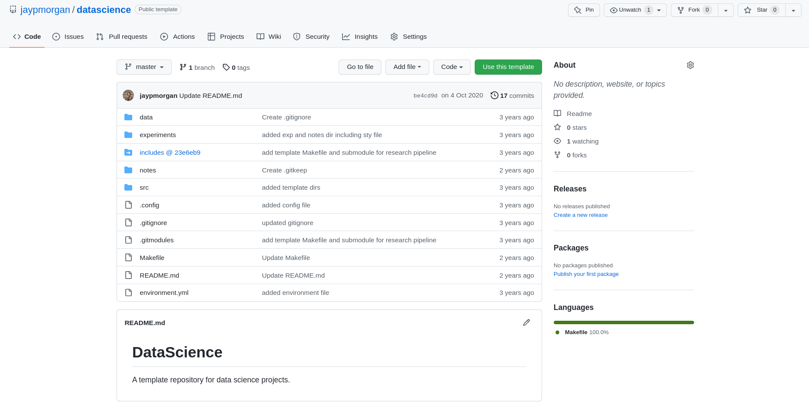
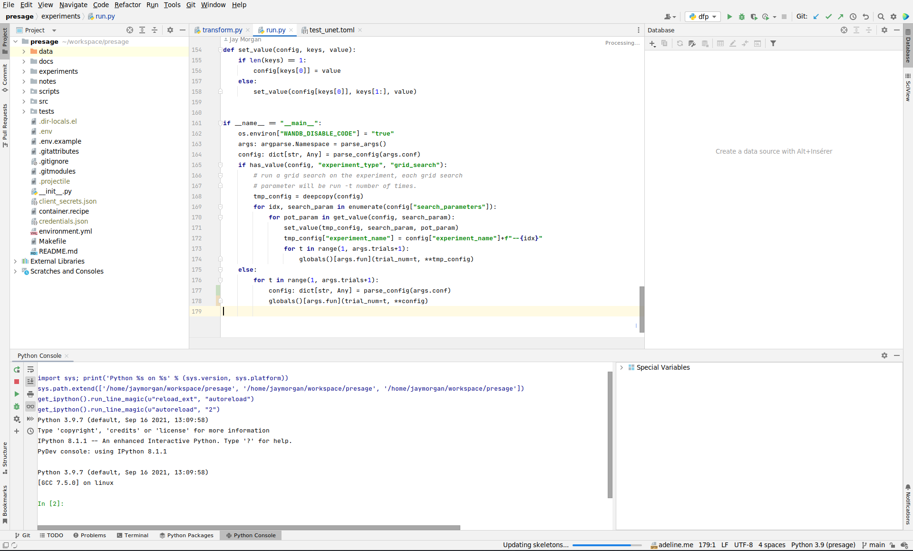

Machine Learning
Lab 1 - Linear Models
Introduction
Plan for this lab
Welcome
Welcome to the first lab. In these lab tutorials we are going to be experimenting with what we've learnt in the lectures. This means that we're going to implement the algorithms and doing some Machine Learning ourselves!
Plan for the first lab
For this first lab session, we're going to need to do just a little 'admin' work before we start implementing these algorithms.
We will need to do the following:
- Create an project directory.
- Create a conda environment and install the latest version of Python.
- Setup our IDE (integrated development environment of choice).
Lab setup
Creating a project directory
Exactly how you want to organise your work is up to you. However, with that being said, I would recommend the following example structure:
~/workspace/<project-name>/<files-&-directories>
So, for example, in this course, we would have the following directory:
~/workspace/machine-learning
Using the datascience repository

Figure 1: The datascience repository templated hosted on github (github.com/jaypmorgan/datascience)
git clone git@github.com:jaypmorgan/datascience.git
Layout & intentionality behind the datascience repository
data– location of all data files (preferably in their own directory such as data/raw/<files>, data/processed/<files>, data/results/<files>). These files will not be committed to git as they much be too large.experiments– location of one off files that are used for running single experiments and scripts.notes– storage of notes and reports created during the lifetime of the project.src– here we store the library of functions/classes that are useful for the entire project..config– a configuration fileMakefile– make routines for building the project (if we have any, we'll cover this at a later point, alternatively you can read: https://blog.morganwastaken.com/2020-03-05/makefile).environment.yml– the configuration script for conda (we'll cover this just in a moment!).README.md– Markdown readme file that explains introduces the project, and perhaps some installation and running instructions for others.
I will using this folder structure for our labs, so we'll see (by the way of example) how we use this structure.
Creating a conda environment
Conda is a command line tool to manage environments. We're going to highlight some of the most used commands. But for the full list of management, you can use the instructions at: https://conda.io/projects/conda/en/latest/user-guide/tasks/manage-environments.html
If you're creating a brand new environment, use:
conda create --name <name-of-env>
This will prompt you to confirm you want to create a new environment, whereupon you enter either a y or n. If y your new environment will be created, but start using the environment, you will first have to activate it.
For more information, visit: https://pageperso.lis-lab.fr/jay.morgan/resources/2021-programming-level-up/lectures/week-3/lecture.html#orga9fbc8c
Installing jupyter notebook & jupyter lab
As we're going to do lots of visualisations, we're going to want some environment where we can rapidly evolve and interrogate our data. For this, we're going to use jupyter notebooks. However, there are many other alternatives if you're so inclined. There is google colab (a jupyter-like environment on the cloud), org-mode with org-babel if you like emacs, the Spyder IDE with code cells.
To install jupyter notebook use (assuming you have activated the correct environment):
conda install -c conda-forge jupyterlab
https://jupyterlab.readthedocs.io/en/stable/getting_started/installation.html
Setting up our IDE
While most of our exploration is going to take place inside a jupyter notebook, we're going to use a fully fledged IDE for the heavy lifting of our Python programming. The IDE we're going to use in these lab sessions is PyCharm.

Figure 2: PyCharm IDE